20/10/2024 — Hãy xem điều gì xảy ra khi huyết khối thân chung trái tiến triển từ tắc gần hoàn toàn sang tắc hoàn toàn
Bản dịch tiếng Việt của bài "See what happens when a left main thrombus evolves from subtotal occlusion to total occlusion." – Dr. Smith’s ECG Blog. Giữ nguyên toàn bộ 14 hình ảnh của bản gốc.
Tác giả: Magnus Nossen
Bệnh nhân trong ca hôm nay là một người đàn ông ngoài 70 tuổi, có tăng huyết áp và đái tháo đường típ II. Vợ ông gọi xe cấp cứu sau khi ông bị một cơn mất ý thức. Theo lời vợ ông, cơn ngất kéo dài khoảng 2-3 phút. Ông tỉnh lại, tỉnh táo và đau ngực — cơn đau mà ông cũng đã bị từng lúc trong vài ngày trước đó. Điện tâm đồ dưới đây được ghi khoảng 20 phút sau khi ông tỉnh lại. Bạn nghĩ gì?
Điện tâm đồ #1

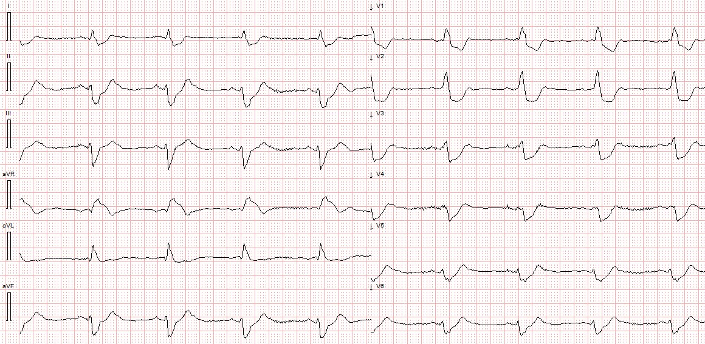
Điện tâm đồ trên cho thấy nhịp xoang khoảng 60 lần/phút. Có RBBB và blốc phân nhánh trái trước (LAHB). Khoảng PR bình thường. Nhiệm vụ đầu tiên khi đánh giá thiếu máu cục bộ trên một QRS rộng là xác định điểm kết thúc của QRS. Khi đã xác định được điểm kết thúc của phức bộ QRS và điểm bắt đầu của đoạn ST, bạn có thể đánh giá xem có ST chênh lên đồng hướng, ST chênh xuống đồng hướng, hay có các đoạn ST ngược hướng quá mức hay không. Dưới đây (Hình A), tôi đã đánh dấu điểm kết thúc của các phức bộ QRS bằng cách vẽ một đường thẳng đứng qua điểm J của các chuyển đạo chuẩn và chuyển đạo trước tim. Các mũi tên màu xanh chỉ ST chênh xuống và mũi tên màu đỏ chỉ ST chênh lên.
Hình A

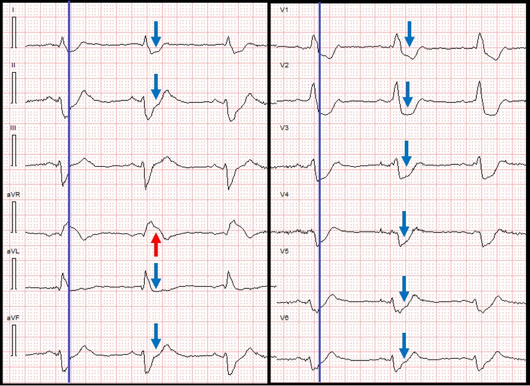
Giờ đây có thể thấy rõ là có đoạn ST chênh xuống ở hầu hết mọi chuyển đạo của điện tâm đồ (V1-V6, I, II, aVL và aVF). Đoạn ST ở chuyển đạo III gần như đẳng điện, có lẽ chênh lên nhẹ. Có ST chênh lên ở chuyển đạo aVR, đúng như dự đoán khi có ST chênh xuống lan rộng như thế này. Đoạn ST chênh xuống ở các chuyển đạo trước tim ngược hướng quá mức. Ở các chuyển đạo I, II và aVF có ST chênh xuống (STD) đồng hướng.
Điện tâm đồ này có ST chênh xuống lan rộng và hình dạng gần như “kiểu Aslanger”. Các thay đổi đoạn ST phù hợp với thiếu máu cục bộ dưới nội tâm mạc nặng, có thể do nhồi máu cơ tim típ I từ hội chứng vành cấp (ACS) hoặc có thể do nhồi máu cơ tim típ II (bệnh động mạch vành không tắc nghẽn kèm mất cân bằng cung/cầu).
Có nhiều tình huống lâm sàng có thể giải thích thiếu máu cục bộ dưới nội tâm mạc lan tỏa không do ACS và nứt vỡ mảng xơ vữa. Bệnh sử trong ca hôm nay, với mất ý thức đột ngột rồi đau ngực, rất gợi ý ACS và thiếu máu cục bộ típ I là nguyên nhân của các thay đổi trên điện tâm đồ. Theo kinh nghiệm của tôi, bệnh nhân bị nhồi máu cơ tim típ II (trừ khi do một rối loạn nhịp nhanh) thường khởi phát triệu chứng từ từ hơn, phản ánh sự khởi phát từ từ hơn của phần lớn các bệnh cảnh lâm sàng thường gặp liên quan đến nhồi máu cơ tim típ II (ví dụ nhiễm khuẩn huyết, thiếu máu, giảm oxy máu, hạ huyết áp nặng, v.v., v.v.)
Bệnh nhân được cho dùng aspirin và heparin. Trong lúc chuẩn bị vận chuyển, bệnh nhân trở nên tái xám và lú lẫn, da lạnh và ẩm, mạch rất yếu. Một điện tâm đồ ghi lại được thực hiện khoảng 15 phút sau điện tâm đồ đầu tiên. Bạn nghĩ điều gì đã xảy ra và chẩn đoán nhiều khả năng nhất là gì?
Smith: sau khi bài được đăng, Pierre Taboulet, người có một trang điện tâm đồ bằng tiếng Pháp tuyệt vời, đã cho biết ông thấy blốc AV mức độ cao trên điện tâm đồ này:

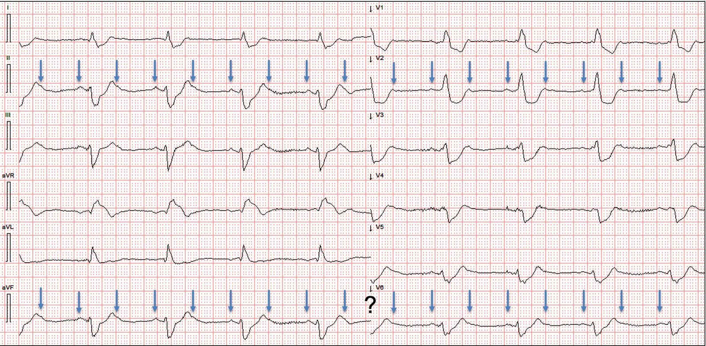
Các mũi tên chỉ vào sóng P
Điện tâm đồ #2

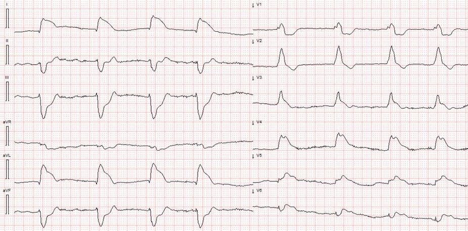
Một lần nữa có QRS rộng do RBBB và LAFB. Nhịp lúc này là rung nhĩ. Trên điện tâm đồ ban đầu (điện tâm đồ #1), aVR có ST chênh lên. Giờ đây chuyển đạo này cho thấy ST chênh xuống. Nhiều chuyển đạo có ST chênh xuống trên điện tâm đồ ban đầu nay lại có ST chênh lên! Lúc này có ST chênh lên rõ ở các chuyển đạo I, aVL và V2-V6.
Trong Hình B dưới đây, tôi lại đánh dấu điểm J bằng các đường thẳng đứng. Các mũi tên màu đỏ chỉ vào đoạn ST chênh lên.
Hình B

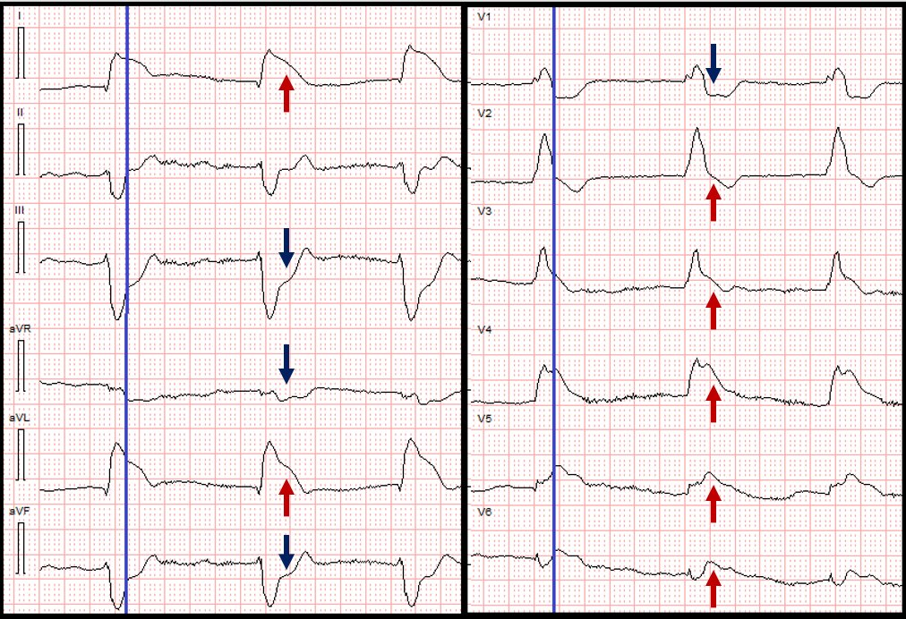
Tại thời điểm này, với điện tâm đồ thay đổi từ ST chênh xuống lan tỏa sang ST chênh lên lan rộng và bệnh nhân biểu hiện sốc tim, tắc thân chung động mạch vành trái (LMCA) là chẩn đoán có khả năng.
Có ST chênh lên «kiểu vây cá mập» (shark fin) ở nhiều chuyển đạo. Đây là một dấu hiệu đáng ngại. Bệnh nhân được khẩn trương chuyển đến khoa cấp cứu gần nhất (cơ sở không có PCI) để ổn định. Ngay trước khi đến nơi, ông mất ý thức với điện tâm đồ dưới đây trên monitor.
Điện tâm đồ #3

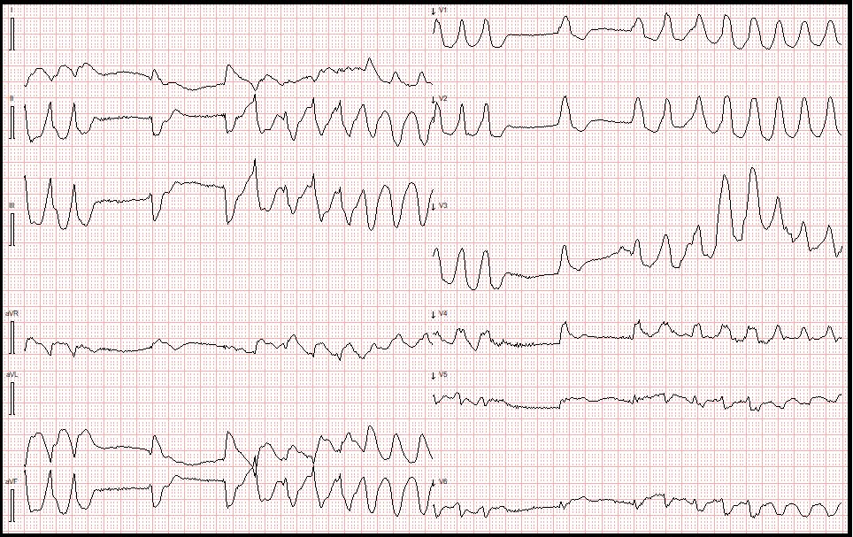
Điện tâm đồ trên cho thấy VT đa dạng với tần số khoảng 180 lần/phút. Rối loạn nhịp tự chuyển về trước khi kịp khử rung.
Khi đến khoa cấp cứu, huyết áp xâm lấn là 35/15mmHg và bệnh nhân trong tình trạng sốc tim sâu, lú lẫn nặng do giảm tưới máu não. Khí máu động mạch cho thấy nhiễm toan lactic với nồng độ lactat 17mmol/L. Bệnh nhân này đang thực sự hấp hối vì OMI thân chung động mạch vành trái, và ngừng tim do VT/VF hoặc PEA sắp xảy ra! Nếu không khôi phục được một phần dòng chảy LMCA, ông sẽ không sống sót. Bạn chỉ có một lựa chọn duy nhất trong tình huống này vì trung tâm PCI cách 1 giờ và bệnh nhân quá bất ổn, sẽ không sống sót qua quá trình vận chuyển.
HÃY DÙNG NGAY THUỐC TIÊU SỢI HUYẾT!
Thuốc tiêu sợi huyết có thể cứu sống bệnh nhân trong tình huống này. Bệnh nhân được dùng thuốc tiêu sợi huyết và ngay sau đó, huyết áp tâm thu tăng lên khoảng 80mmHg trong khi vẫn đang truyền epinephrine. Điện tâm đồ dưới đây (điện tâm đồ #4) được ghi lại.
Điện tâm đồ #4

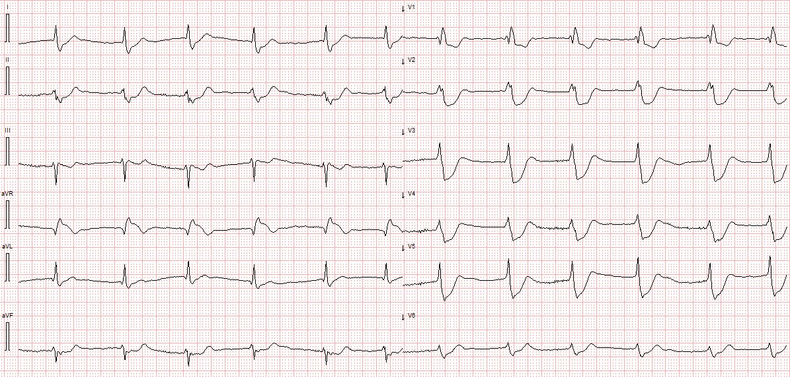
Mặc dù điện tâm đồ trên cho thấy ST chênh xuống lan rộng và rất nhiều, những thay đổi thiếu máu cục bộ này thực ra là một sự cải thiện so với điện tâm đồ trước khi tiêu sợi huyết (điện tâm đồ #2). Giờ đây đã có một phần dòng chảy trong LMCA!
Loạt điện tâm đồ này (điện tâm đồ #1, #2 và #4) minh họa rõ rằng tắc gần hoàn toàn thân chung trái thường đi kèm thiếu máu cục bộ dưới nội tâm mạc nặng (ST chênh xuống sâu và lan tỏa), trong khi điện tâm đồ ghi trong lúc LMCA tắc hoàn toàn (điện tâm đồ #2) sẽ cho thấy ST chênh lên lan rộng. Tắc LMCA hoàn toàn đi kèm sốc trên lâm sàng và/hoặc ngừng tim.
Như đã nói ở trên, một phần dòng chảy đã được khôi phục trong thân chung động mạch vành trái vào thời điểm ghi điện tâm đồ #4. Việc chuyển đến cơ sở có khả năng PCI đã được sắp xếp – và khi đến trung tâm PCI, bệnh nhân duy trì được huyết áp động mạch trung bình (MAP) 40-50 mmHg và tỉnh táo. Lactat của ông đã giảm xuống 8. Video dưới đây cho thấy hình chụp mạch vành. Chất lượng hình ảnh không được tốt lắm, nhưng bạn có thể thấy chỗ tắc gần hoàn toàn của thân chung động mạch vành trái.
Dưới đây là một ảnh tĩnh, với mũi tên màu đỏ chỉ chỗ hẹp gần hoàn toàn của LMCA.

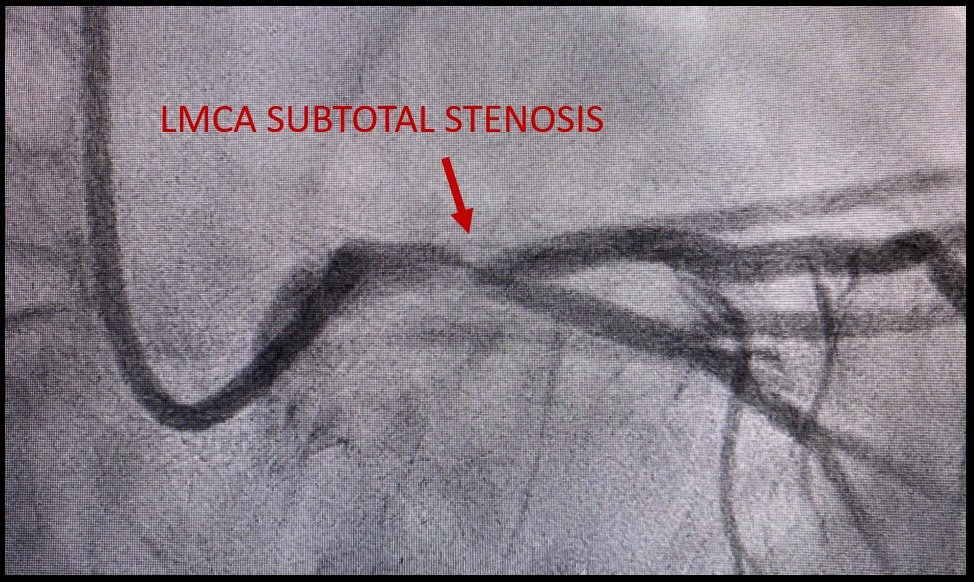

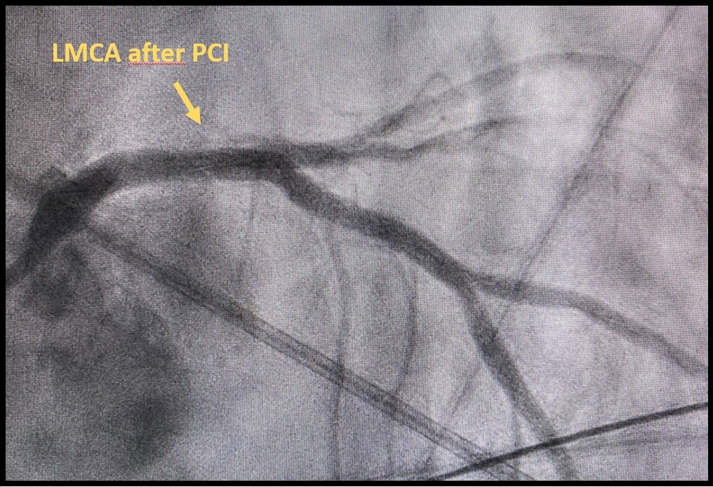
Sau PCI, bóng đối xung động mạch chủ (IABP) được đặt và cần phối hợp norepinephrine với dobutamine để duy trì áp lực tưới máu. Thuốc vận mạch được giảm dần trong vòng 24 giờ. Troponin I ban đầu lấy tại khoa cấp cứu địa phương trước khi chuyển đến trung tâm PCI là 42ng/L (tham chiếu < 34ng/L); NT-proBNP là 307ng/L (tham chiếu < 300ng/L)
Điện tâm đồ dưới đây được ghi 12 giờ sau PCI. Có nhịp xoang với một ngoại tâm thu nhĩ (sóng P thấy rõ nhất ở chuyển đạo V1 và V2, chồng lên sóng T của QRS thứ hai). PAC này dẫn truyền xuống thất với khoảng PR kéo dài. Các thay đổi sâu của đoạn ST và sóng T đã hết. Blốc hai phân nhánh vẫn còn
Điện tâm đồ #5
(12 giờ sau PCI)

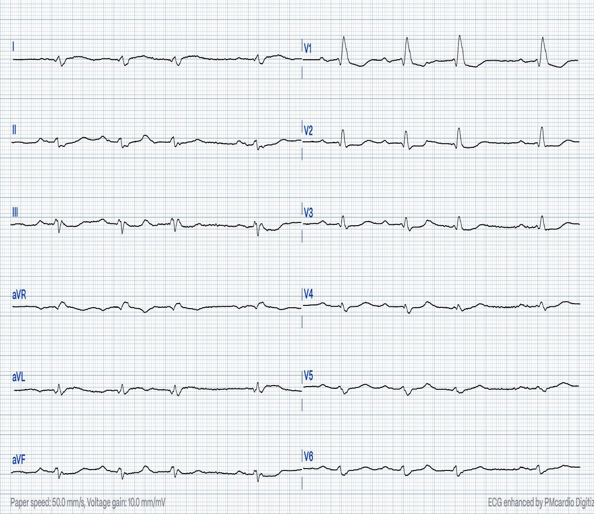
Troponin T độ nhạy cao 16 giờ sau nhập viện là 14.877ng/L (đây là một nhồi máu rất lớn!). NT-proBNP là 3753ng/L. Có tăng men gan thoáng qua, như thường gặp trong sốc cấp. Bệnh nhân nằm vài ngày tại đơn vị hồi sức tim mạch để điều trị suy tim cấp và viêm phổi hít. Sau đó ông được chuyển về bệnh viện địa phương, không có tổn thương thần kinh và không có di chứng nghiêm trọng. Không có dữ liệu theo dõi dài hạn.
Queen of Hearts đã đọc các điện tâm đồ hôm nay ra sao?
Xem hình dưới đây với kết quả đọc điện tâm đồ #1, #2, #4 và #5

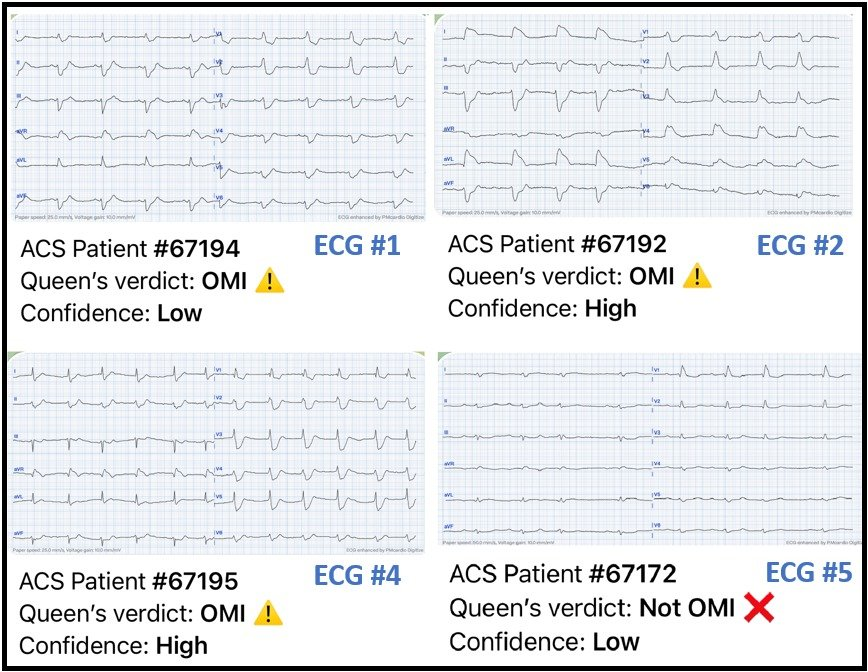
Bấm vào đây để đăng ký quyền truy cập Queen of Hearts.
Xem bài này để biết 8 ca tắc hoàn toàn thân chung trái (LM):
How does Acute Total Left Main Coronary occlusion present on the ECG? (Tắc cấp hoàn toàn thân chung động mạch vành trái biểu hiện thế nào trên điện tâm đồ?)
Xem ca này và ca này để có thêm ví dụ về ACS liên quan đến LMCA
Những điểm cần học:
- Tắc LMCA có tiên lượng xấu, hầu hết bệnh nhân không kịp đến bệnh viện. Những người đến được khoa cấp cứu thường bị tắc thoáng qua kèm tái tưới máu.
- Nghĩ đến LMCA khi có sốc đột ngột và ST chênh lên lan rộng.
- Một số bệnh nhân quá bất ổn để chuyển viện. Thuốc tiêu sợi huyết có thể cứu sống bệnh nhân; bệnh nhân trong ca hôm nay nhiều khả năng đã không sống sót nếu không được điều trị tiêu sợi huyết

===================================
BÌNH LUẬN CỦA TÔI, bởi KEN GRAUER, MD (20/10/2024):
===================================
Ca hôm nay là câu chuyện về một kết quả đáng mừng nhờ xử trí sáng suốt một bệnh nhân nguy kịch bị sốc tim do tắc thân chung trái cấp.
- Như Dr. Nossen đã nói — nhân viên cấp cứu sẽ không thường gặp bệnh nhân bị tắc thân chung trái cấp — đơn giản vì khả năng sống sót của phần lớn những bệnh nhân này rất hạn chế. Ca hôm nay mang lại một cơ hội đặc biệt để theo dõi diễn tiến của một bệnh nhân trong suốt quá trình tắc thân chung trái đang diễn ra.
Trước khi bình luận cụ thể về 2 bản ghi trong ca hôm nay — đáng để ôn lại những bài học rút ra về biểu hiện trên điện tâm đồ của bệnh nhân bị tắc thân chung trái cấp. Để làm điều này — tôi trích trong Hình 1 phần tóm tắt của tôi về các kết luận chính của Dr. Smith liên quan đến hình ảnh điện tâm đồ trong tình huống này. Các Điểm Cần nhớ MẤU CHỐT như sau:
- Không có một biểu hiện điện tâm đồ “duy nhất” nào cho bệnh nhân tắc thân chung trái cấp. Theo đúng nghĩa đen — Bạn có thể thấy hầu như bất cứ điều gì!
- Lý do của biểu hiện điện tâm đồ rất thay đổi như vậy là nhiều vùng có thể bị ảnh hưởng ở các mức độ khác nhau — khiến không thể dự đoán bạn sẽ thấy bao nhiêu ST chênh lên — và ST chênh xuống đối nghịch (soi gương) sẽ làm giảm bớt (nếu không triệt tiêu hoàn toàn) các lực vectơ đoạn ST ban đầu này đến mức nào.
- Hình dạng ST-T ở chuyển đạo aVR có thể là bất cứ kiểu gì khi có tắc thân chung trái cấp.

Áp dụng Hình 1 vào CA BỆNH hôm nay:
Điều tôi thấy thật thú vị trong ca hôm nay — là hình ảnh điện tâm đồ thay đổi mạnh mẽ đến mức nào chỉ trong vòng 15 phút (như trong Hình 2) — đây là khoảng thời gian ngắn ngủi trôi qua giữa lúc ghi 2 bản ghi đầu tiên trong ca hôm nay.
- Như Dr. Nossen nhận định — điện tâm đồ ban đầu (bản ghi BÊN TRÁI trong Hình 2) cho thấy nhịp chậm xoang kèm QRS giãn rộng do blốc hai phân nhánh (RBBB/LAHB).
- Có ST chênh xuống rõ rệt, lan tỏa ở điện tâm đồ #1. Để dễ phân biệt điểm kết thúc của QRS với điểm bắt đầu của đoạn ST — tôi đánh dấu điểm J bằng các mũi tên XANH.
- Thấy ST chênh lên rõ rệt ở chuyển đạo aVR (bên phải mũi tên ĐỎ ở chuyển đạo này).
- Như chúng tôi đã nhiều lần lưu ý — hình ảnh điện tâm đồ gồm ST chênh xuống lan tỏa kèm ST chênh lên ở chuyển đạo aVR gợi ý DSI (thiếu máu cục bộ dưới nội tâm mạc lan tỏa — Diffuse Subendocardial Ischemia). Dù vậy, không chỉ có DSI — điện tâm đồ #1 còn cho thấy tình trạng blốc hai phân nhánh (dạng RBBB/LAHB) vốn rất thường gặp đi kèm tắc LAD cấp.
- Một đặc điểm thú vị khác ở điện tâm đồ #1 — là chuyển đạo III cho thấy đường nền gần như đẳng điện. Tôi ngờ rằng đây là kết quả của sự tương tác giữa các lực điện thiên về ST chênh lên và các lực điện thiên về ST chênh xuống.
- Xin nhấn mạnh: DSI không chỉ ra nhồi máu cấp. Và mặc dù nguyên nhân thường là bệnh mạch vành nền nặng — vẫn có thể gặp các nguyên nhân không do mạch vành (Xem Bình luận của tôi trong bài ngày 1 tháng Ba năm 2023 về các nguyên nhân thường gặp của DSI ). Dù vậy — trong ca hôm nay chúng tôi có kết quả thông tim xác nhận tắc gần hoàn toàn thân chung động mạch vành trái (LMain) (điều này phù hợp với các dấu hiệu trên điện tâm đồ #1).
=========================
Và rồi, 15 phút sau trong ca hôm nay — bệnh nhân này rơi vào sốc tim.
- Đáng dành chút thời gian để so sánh từng chuyển đạo một xem những thay đổi dưới dạng ST chênh lên và ST chênh xuống xảy ra như thế nào giữa điện tâm đồ #1 và điện tâm đồ #2.
- Như Dr. Nossen nhận định — sự xấu đi đột ngột về tình trạng lâm sàng của bệnh nhân, cùng với các thay đổi ST-T hiện thấy ở điện tâm đồ #2 — gần như chắc chắn cho thấy đã tiến triển thành tắc hoàn toàn thân chung động mạch vành trái (mặc dù thông tim thực hiện ngay sau đó cho thấy tắc gần hoàn toàn chứ không tắc hoàn toàn).
- ĐIỂM THEN CHỐT (PEARL): Như đã nêu ở câu thứ 1 của Bảng trong Hình 1 — một lý do chính khiến dữ liệu ít ỏi mà chúng ta có về việc điện tâm đồ “trông như thế nào” khi tắc thân chung động mạch vành trái cấp lại đa dạng đến vậy — là chúng ta không bao giờ biết chắc trạng thái của động mạch vào thời điểm ghi điện tâm đồ (vốn có thể khác với trạng thái của động mạch lúc thông tim).
- Đặc biệt — Chẳng phải thú vị sao khi hình ảnh ST-T ở chuyển đạo aVR đảo ngược hoàn toàn từ ST chênh lên rõ rệt khi có DSI (ở điện tâm đồ #1) — thành ST chênh xuống rõ rệt khi chỗ hẹp thân chung động mạch vành trái trở thành hoàn toàn (ở điện tâm đồ #2). Thảo nào dữ liệu ít ỏi mà chúng ta có lại cho thấy sự khác biệt lớn như vậy về hình ảnh ST-T ở chuyển đạo aVR khi “tắc” thân chung động mạch vành trái.

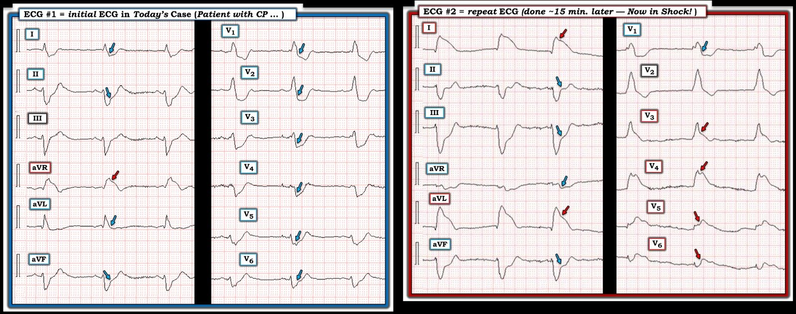
Thêm về “Vây cá mập” (Shark-Fin) . . .
Lần thứ 1 tôi nhìn thấy ST chênh lên dạng “vây cá mập” (và ST chênh xuống dạng “vây cá mập”) — tôi hoàn toàn không biết mình đang thấy gì. Nhờ luyện tập — hình ảnh giả QRS giãn rộng này trở nên dễ nhận ra.
- Ca hôm nay có thêm đặc điểm ST chênh lên dạng vây cá mập trên một phức bộ QRS vốn đã giãn rộng (do RBBB/LAHB). Dù vậy — việc nhận ra ST chênh lên hoặc chênh xuống rõ rệt vẫn dễ dàng một khi đã xác định được điểm J (các mũi tên màu trong Hình 2).
LƯU Ý: Với những ai muốn luyện tập thêm cách nhận ra các thay đổi ST-T dạng vây cá mập — chúng tôi đã trình bày các ca thuộc thực thể này trong những bài ECG Blog sau (cùng nhiều bài khác):
- Trong bài ngày 11 tháng Sáu năm 2018 —
- Trong bài ngày 4 tháng Mười năm 2019 —
- Trong bài ngày 22 tháng Mười Một năm 2019 —
- trong bài ngày 24 tháng Một năm 2020 —
- trong bài ngày 16 tháng Hai năm 2020 —
- trong bài ngày 25 tháng Tư năm 2020 —
- trong bài ngày 19 tháng Năm năm 2020 —
- trong bài ngày 27 tháng Chín năm 2023 —
- trong bài ngày 3 tháng Năm năm 2024 —
- Và — ca này về một hình ảnh giả giống vây cá mập (Bình luận của tôi trong bài ngày 23 tháng Tám năm 2024).